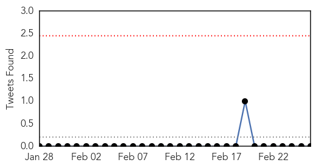

30 Day Trends
Web: 3 alerts, 7 warnings
Twitter: 0 alerts, 0 warnings
Top Articles:
- 0.995
- Study: MERS-CoV may have been in Saudi camels 22 years ago
- 0.992
- Camels likely source of MERS virus in people: study
- 0.967
- MERS Virus That Threatens Humans Also Found in Camels
- 0.944
- MERS coronavirus in 74% of Saudi Arabian camels – The Chart
- 0.925
- News Scan for Feb 26, 2014
- 0.838
- Viruses tracking by satellite to prevent outbreaks - Emirates 24
- 0.631
- DHA and France to collaborate in combating infectious diseasesHealthcare
Top Tweets:
-
No tweets found for Feb 26, 2014
Web/News Articles

Tweets
Article Locations

Article Confidences